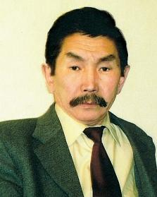

Учредители
Тайсаев Баир Табанович

Тайсаев Баир Табанович. Родился 26. 06. 1948 г. , уроженец Ольхонского района
Иркутской области.
В 1982 — окончил Ленинградский институт живописи, скульптуры и архитектуры им.
И.Е. Репина, факультет графики (мастерская В.А. Ветрогонского).
С 1982 — работает в Художественном фонде Союза художников Бурятии.
С 1987 — член Союза художников России.
С 2002- по н.в — председатель Союза художников Бурятии.
С 1980 — участник республиканских, зональных, всесоюзных, российских выставок, в т.ч.
персональных в Республиканском художественном музее им. Ц.С. Сампилова (1984,1999,
Улан-Удэ, 2011 «Женщины и цветы»), в библиотеке при Кэмбриджском университете
(1997, Великобритания).
Автор работ: «Дети Северобайкальска» (1982), «Начало» (1982), «Смена» (1982),
«Северомуйский тоннель» (1982), «Тоннель» (1983), «Байкал. Сарма» (1984), «Доржи
Банзаров» (1993), «Гонители тьмы» (1996).
Произведения находятся в Республиканском художественном музее им. Ц.С.Сампилова,
в фондах «Росизопропаганда» (Москва), в Северобайкальской картинной галерее,
в частных коллекциях.
Митыпов Владимир Гомбожапович
Митыпов Владимир Гомбожапович — русский/советский писатель-фантаст.
Родился 2 июня 1940 года, в городе Чита.
Окончил геологический факультет Иркутского университета и Высшие литературные
курсы при Литературном институте им. М. Горького. Является председателем Бурятской
ассоциации жертв политических репрессий. Ему присвоено звание народного писателя
Бурятии. Член Союза писателей России. Живет в Улан-Удэ.
Первая научно-фантастическая публикация — повесть «Зелёное безумие Земли» (1966,
1969).
Исторические произведения Митыпова — повесть «Ступени совершенства» (1969), роман
«Долина бессмертников» (1975) — так же ассоциированно связаны с научной
фантастикой. Древний Египет и держава хунну реконструированы в них воображением
писателя-фантаста.
Его перу принадлежат известная повесть «Инспектор золотой тайги» и повесть для детей
«Мамонтёнок Фуф».
Книги В. Митыпова переведены на английский, болгарский, венгерский, грузинский,
китайский, корейский, монгольский, немецкий, польский, сербско-хорватский, словацкий,
французский, чешский, японский языки.